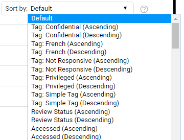

Sort on a single (one) column: Click on a column header.
Click again to switch between ascending/descending.
Alternatively, sort by using the Sort by field:

Sort on multiple columns:
Ctrl+Click successive column headers.
Ctrl+Click again to switch between ascending/descending.
The sorting order is displayed above the document list. See screenshot below:
Sort on one column again: Click on a column header.
Change location of column: Drag&drop column headers for your prefered order.
Change width of a column: Select vertical border and drag&drop.
Return to evenly distributed column widths: Click the Reset column sizes icon.

Add/remove columns via the Settings icon:
Alternatively, click to add a column. Click the Remove icon behind a column to remove it.